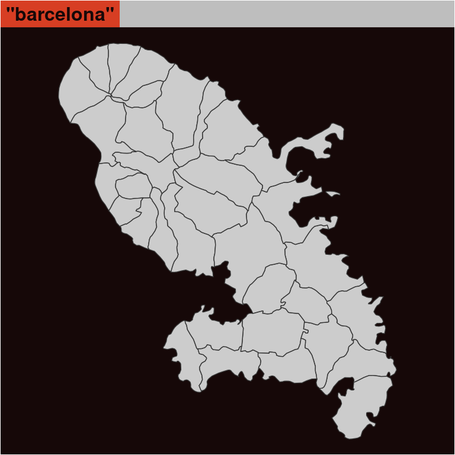
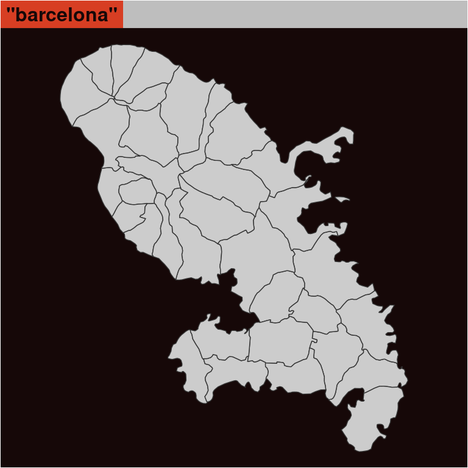

How to Use Themes
Timothée Giraud
2021-06-15
Source:vignettes/web_only/how_to_use_themes.Rmd
how_to_use_themes.Rmdmf_theme() sets a map theme. A theme is a set of graphical parameters that are applied to maps created with mapsf. These parameters are the figure margins, background and foreground colors and mf_title() options. mapsf offers some builtin themes. It’s possible to modify an existing theme or to start a theme from scratch. The map theme can also be set with mf_init() and mf_export().
Builtin themes
Here are the builtin themes. We have added a grey background color to make the margins more visible. 


 

The following table displays the parameters of these themes.
| name | bg | fg | mar | tab | pos | inner | line | cex | font |
|---|---|---|---|---|---|---|---|---|---|
| default | #f7f7f7 | #333333 | c(0.5, 0.5, 1.7, 0.5) | TRUE | left | FALSE | 1.2 | 1 | 1 |
| ink | #FFDEAD | #0000FF | c(0, 0, 1.2, 0) | FALSE | left | FALSE | 1.2 | 0.9 | 2 |
| dark | #2E3947 | #7E848C | c(0.5, 0.5, 2, 0.5) | FALSE | left | FALSE | 1.5 | 1 | 1 |
| agolalight | #EDF4F5 | #82888A | c(0, 0, 2, 0) | FALSE | left | FALSE | 2 | 1.5 | 3 |
| candy | #FDFCFE | #6B1767 | c(0, 0, 2, 0) | FALSE | center | FALSE | 2 | 1.5 | 2 |
| darkula | #232525 | #A9B7C6 | c(0.5, 0.5, 0.5, 0.5) | TRUE | right | TRUE | 1.5 | 1 | 4 |
| iceberg | #0B0E0E | #BDD6DB | c(0.5, 0.5, 0.5, 0.5) | TRUE | right | TRUE | 1.5 | 1 | 4 |
| green | #1B1D16 | #D7FF68 | c(0.5, 0.5, 2, 0.5) | FALSE | center | FALSE | 1.5 | 1 | 2 |
| nevermind | #4DB8DA | #121725 | c(2, 2, 3.5, 2) | FALSE | center | FALSE | 1.5 | 1.4 | 1 |
| jsk | #ffdc11 | #0c973c | c(0, 0, 1.5, 0) | FALSE | left | FALSE | 1.5 | 1 | 2 |
| barcelona | #160808 | #d73e23 | c(0, 0, 1.2, 0) | TRUE | left | FALSE | 1.2 | 1 | 2 |